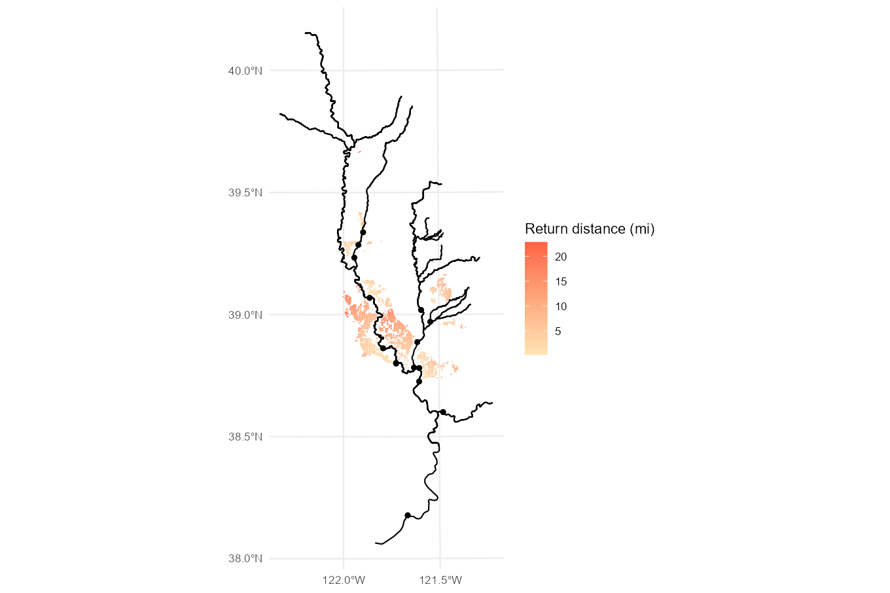

Modeling Approach and Methods
model.RmdThis article describes the approach and methods used to calculate the distances from rice fields to fish-bearing streams.
Watershed delineation and classification
First, we divided the Sacramento Valley into watersheds based on the National Hydrography Dataset (NHD) HUC-10 watersheds, and further split them as needed after inspection of drainage canal flow patterns.
Each watershed was categorized by “flow type”. A “direct” flow type identifies a watershed where the point of return is to a salmonid rearing stream. An “indirect” flow type identifies a watershed where the point of return is to a secondary channel that does not support salmonid rearing. A “lateral” flow type identifies a watershed that drains laterally into a salmonid rearing stream instead of to a singular point of return. Example figures are shown for clarification below.

Direct flow
The following figure shows watersheds that drain directly into fish-bearing streams along with their “direct” points of return.


Distance calculations
We used the center point (centroid) of each rice field to calculate distance to either its watershed’s return point (for the direct and indirect watersheds) or to the nearest stream (for the lateral flow watersheds). In all cases, straight-line distances provided a simple distance approximation for this planning-level analysis. For indirect drainages, flow distances along the secondary channels were calculated and added to the straight line distances from the rice fields to the point of return. Example figures and details are provided below.
Direct flow
Distances for direct flow watersheds were calculated as simple straight-line distances from each rice field centroid to the assigned watershed return point, located on a salmonid-rearing stream. The following figure shows rice field distances within the direct flow watersheds.

Indirect flow
Distance calculations for indirect watersheds use a combination of a simple straight-line distance and a flow distance along the secondary channel.
First, straight-line distances were calculated from each rice field centroid to the indirect point of return assigned to the watershed, using the same method as the direct returns previously described.
Then, the flow distances along the secondary channel, from the return
point (return_id) into the downstream return point on the
salmonid-rearing stream (dtfbs_id)1, were calculated.
The straight-line distances were added to the flow distances along secondary channels to get a total distance for each field. Total distance results for indirect watershed are shown in the following figure.

Lateral flow
Distances for lateral flow watersheds were calculated as simple straight-line distances from each rice field centroid to the nearest salmonid-rearing stream within the watershed. The following figure shows rice field distances within the lateral flow watersheds.
Note: Rectangular distances
An alternative “rectangular” distance calculation was also included, using grid distance (east-west plus north-south) rather than straight-line (hypotenuse) distance. At the scale of this analysis, the difference between the two versions is minimal. Total distance results using the grid distance are shown in the following figure.

The straight-line and rectangular distance measures help to place a lower and upper bound, respectively, on the true flow distance from each rice field to the nearest point of return on a salmonid-rearing stream. Since the majority of the drainage infrastructure is on a grid pattern, all distances should lie between these two values. The following figure shows that distances are never greater than sqrt(2) times the straight-line flow distance. This means that true return flow distances will not be more than 1.41 times the straight-line approximation used in this study.
Salmonid rearing streams are frequently abbreviated as
fbsin source code and attribute names; this is short for fish-bearing stream↩︎